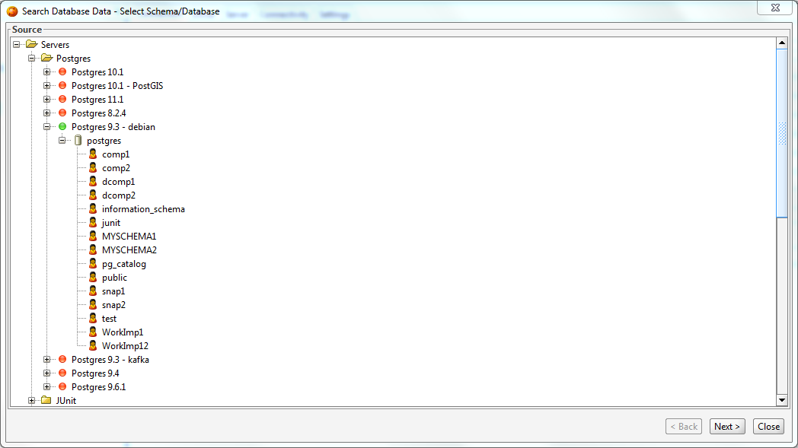
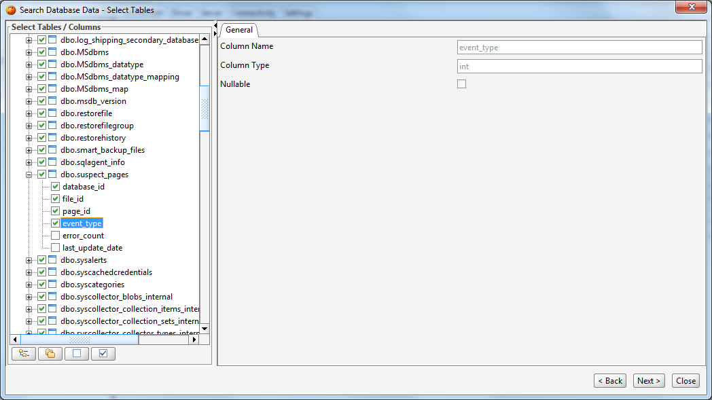
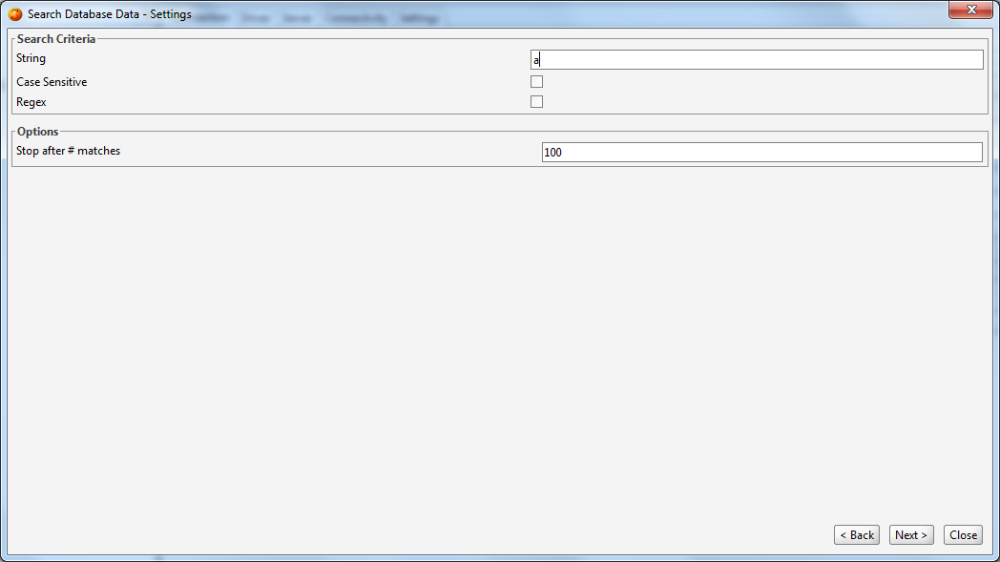
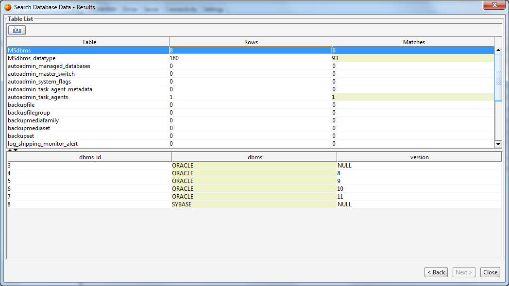

The Data Serach Tool allows you to search for a particular piece of data across tables and views of a schema/database. The search tool will look for the specified string in all tables/views until the maximum number of matches has been reached.
You can invoke the Data Search Tool from the 'Tools/Search Database' menu in the main toolbar of DB Solo.
The first screen of the data search tool allows you to select the schema/database where you want to search the data.

After selecting the schemas/databases click on 'Next' to move to table selection panel.
The table selection screen lets you select the tables and columns you want to include in your search. The tree control on the left hand side lets you select the tables and their columns to be included in the search. The right-hand side gives you more details on the selected table/column.

The settings screen allows you to specify the string to be searched for as well as various other options. Under the 'Search Criteria' section you have the following options:
Under the 'Options' section you have the following options:

After applying all the settings you wish to change, click on 'Next' to start the search.
After DB Solo has completed the search you will see the results screen that is divided into two sections. The upper part lists all the searched tables with the number of matches. When you select a table in the upper section, the search details will be shown in the bottom section for the selected table. The values with a match will be colored differently than columns that do not match.

| Back to Index | DB Solo www.dbsolo.com support@dbsolo.com |